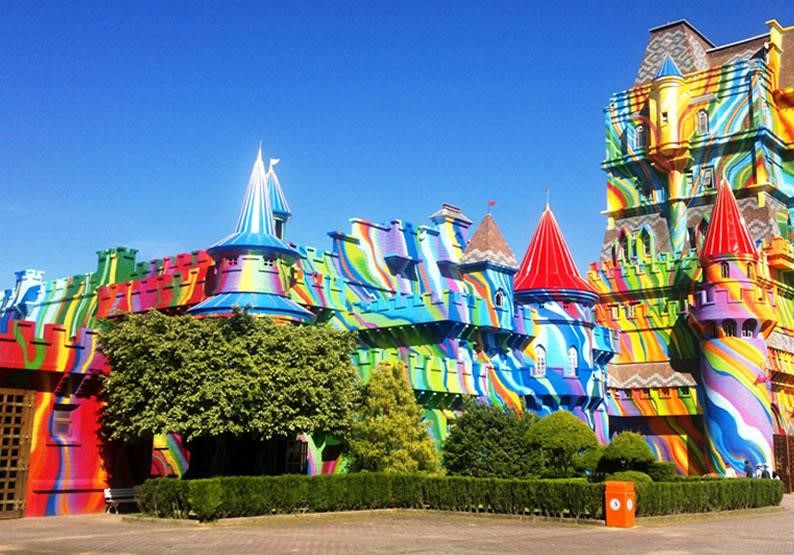
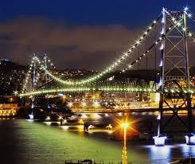

Turismo no Brasil
Conheça as duas áreas geográficas mais visitadas do país
O Brasil tem uma enorme extensão territorial com diversos biomas, relevos e áreas onde o turismo é de grande importância na economia.
Na região Sudeste, São Paulo e Rio de Janeiro são os Estados pioneiros dentro do sistema econômico turístico, isso se deve a existência de praias exuberantes e paradisíacas, flora inesquecível e clima favorável. As praias têm um relevo litorâneo, mais conhecido como restinga, solo com a presença de areia, o que chama a atenção de todos que procuram uma área de sol e diversão. O clima também é muito especifico, chamado de litorâneo úmido, é bem quente e muito bem visto por turistas.
Já no Sul do Brasil, o clima predominante é o subtropical, caracterizado por baixas temperaturas, apresenta as quatro estações do ano bem definidas, com verões quentes, invernos rigorosos e chuvas bem distribuídas ao longo do ano. A ida para essa região é feita por pessoas que gostam de climas mais amenos, imperdível para quem gosta de aventuras e visitações a lugares maravilhosos.
Beto Carrero World, Penha,Santa Catarina
Famoso pelas atrações para toda a família e diversão para as crianças.
Florianópolis, Santa Catarina
Famosa por sua iluminação e decoração noturna.
Sobre a autora
Meu nome é Taynara Marques Nogueira, nasci em 08 de março de 2003, curso o 3º ano na escola SESI de Araguari e já fiz um curso de mecânica industrial SENAI. Pretendo cursar medicina na área de ortopedia e lançar um livro autoral.
Aluno(a): Taynara Marques